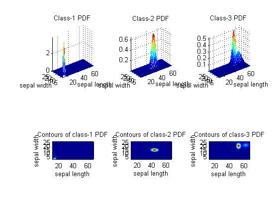
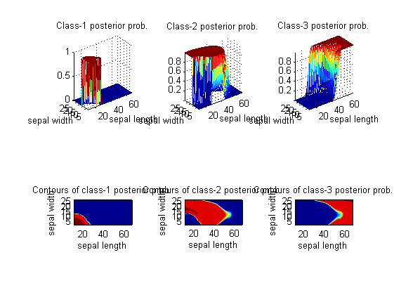
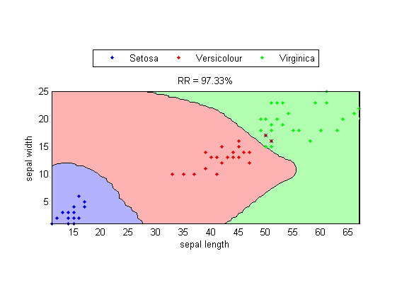
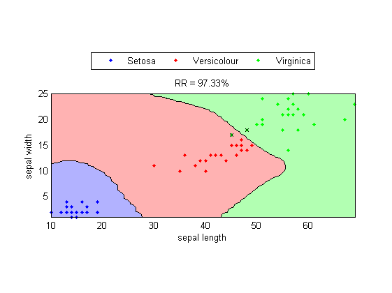
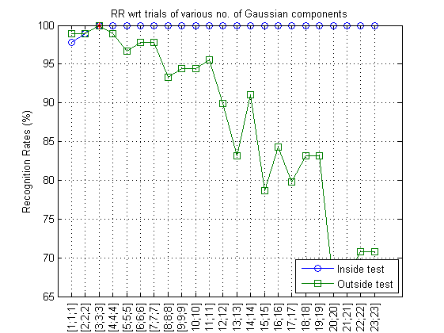
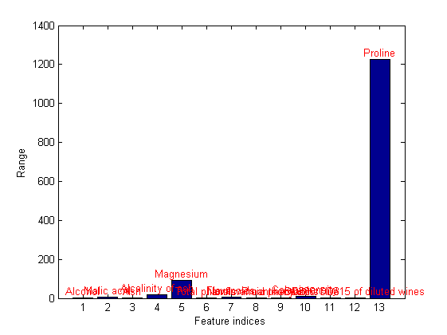
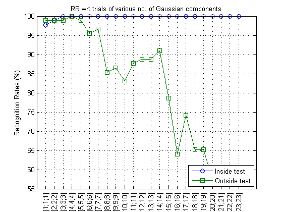

GMM-based Classifiers (GMMC)
We can also use GMM as a classifier for pattern recognition. We shall use GMMC (GMM classifier) to denote such a GMM-based classifiers. The workflow of a GMMC involves the following steps:
- At the training stage, we need to obtain a GMM for each class. In other words, we need to use the data of a class to train a GMM. There is no interactions between GMM of different classes.
- At the application stage, we need to send the unknown-class data to the GMM of each class. The predicted class wlll have a GMM with the maximum probability.
The following example demonstrates the use of GMM for classification of iris dataset:
Contents
A basic example
In the following example, we shall use dimensions 3 and 4 of the Iris dataset for the GMMC classifier.
[DS, TS]=prData('iris'); DS.input=DS.input(3:4, :); % Only use the last 2 dim TS.input=TS.input(3:4, :); % Only use the last 2 dim gmmcOpt=gmmcTrain('defaultOpt'); gmmcPrm=gmmcTrain(DS, gmmcOpt); cOutputDs=gmmcEval(DS, gmmcPrm); rrDs=sum(DS.output==cOutputDs)/length(DS.output); fprintf('Inside-test recog. rate = %g%%\n', rrDs*100); cOutputTs=gmmcEval(TS, gmmcPrm); rrTs=sum(TS.output==cOutputTs)/length(TS.output); fprintf('Outside-test recog. rate = %g%%\n', rrTs*100);
Inside-test recog. rate = 97.3333% Outside-test recog. rate = 97.3333%
2D PDFs and posterior probabilities
Once we have obtained the parameters of GMMC, we can plot the 2D PDF of the GMM of each of the class:
gmmcPlot(DS, gmmcPrm, '2dPdf');
 The 2D posterior probability function for each class can be display similarly:
gmmcPlot(DS, gmmcPrm, '2dPosterior');
 Decision boundary
Based on the computed PDF for each class, we can plot the decision boundaries along with the design set, as follows:
DS.hitIndex=find(cOutputDs==DS.output); % This is used in gmmcPlot. gmmcPlot(DS, gmmcPrm, 'decBoundary');
The decision boundaries and the test set can be plotted similarly:
TS.hitIndex=find(cOutputTs==TS.output); % This is used in gmmcPlot. gmmcPlot(TS, gmmcPrm, 'decBoundary');
The best number of Gaussian components
In the above example, we set the number of Gaussians to be 3 by default. It is obvious that the performance of GMMC is highly related to its number of Gaussian components. In the following example, we can plot the relationship between the recognition rate and the number of Gaussian components in a GMMC.
[DS, TS]=prData('wine'); count1=dsClassSize(DS); count2=dsClassSize(TS); gmmcOpt=gmmcTrain('defaultOpt'); gmmcOpt.config.gaussianNum=1:min([count1, count2]); plotOpt=1; [gmmData, recogRate1, recogRate2]=gmmcGaussianNumEstimate(DS, TS, gmmcOpt, plotOpt);
DS data count = 89, TS data count = 89 DS class data count = [29 36 24] TS class data count = [30 35 24] 1/24: No. of Gaussian = [1;1;1] ===> inside RR = 97.7528%, outside RR = 98.8764% 2/24: No. of Gaussian = [2;2;2] ===> inside RR = 98.8764%, outside RR = 98.8764% 3/24: No. of Gaussian = [3;3;3] ===> inside RR = 100%, outside RR = 100% 4/24: No. of Gaussian = [4;4;4] ===> inside RR = 100%, outside RR = 98.8764% 5/24: No. of Gaussian = [5;5;5] ===> inside RR = 100%, outside RR = 96.6292% 6/24: No. of Gaussian = [6;6;6] ===> inside RR = 100%, outside RR = 97.7528% 7/24: No. of Gaussian = [7;7;7] ===> inside RR = 100%, outside RR = 97.7528% 8/24: No. of Gaussian = [8;8;8] ===> inside RR = 100%, outside RR = 93.2584% 9/24: No. of Gaussian = [9;9;9] ===> inside RR = 100%, outside RR = 94.382% 10/24: No. of Gaussian = [10;10;10] ===> inside RR = 100%, outside RR = 94.382% 11/24: No. of Gaussian = [11;11;11] ===> inside RR = 100%, outside RR = 95.5056% 12/24: No. of Gaussian = [12;12;12] ===> inside RR = 100%, outside RR = 89.8876% 13/24: No. of Gaussian = [13;13;13] ===> inside RR = 100%, outside RR = 83.1461% 14/24: No. of Gaussian = [14;14;14] ===> inside RR = 100%, outside RR = 91.0112% 15/24: No. of Gaussian = [15;15;15] ===> inside RR = 100%, outside RR = 78.6517% 16/24: No. of Gaussian = [16;16;16] ===> inside RR = 100%, outside RR = 84.2697% 17/24: No. of Gaussian = [17;17;17] ===> inside RR = 100%, outside RR = 79.7753% 18/24: No. of Gaussian = [18;18;18] ===> inside RR = 100%, outside RR = 83.1461% 19/24: No. of Gaussian = [19;19;19] ===> inside RR = 100%, outside RR = 83.1461% 20/24: No. of Gaussian = [20;20;20] ===> inside RR = 100%, outside RR = 66.2921% 21/24: No. of Gaussian = [21;21;21] ===> inside RR = 100%, outside RR = 67.4157% 22/24: No. of Gaussian = [22;22;22] ===> inside RR = 100%, outside RR = 70.7865% 23/24: No. of Gaussian = [23;23;23] ===> inside RR = 100%, outside RR = 70.7865% 24/24: No. of Gaussian = [24;24;24] ===> Error out on errorTrialIndex=24 and errorClassIndex=3
The above plot is a bit unusual since the outside-test recognition rate reach its maximum when the number of Gaussians is 1. The first step to debug is to plot the range of all features:
[DS, TS]=prData('wine');
dsRangePlot(DS);
 Obviously the last feature has a much wider range than the others. We can perform input normalization before GMM training, as follows:
[DS, TS]=prData('wine'); [DS.input, mu, sigma]=inputNormalize(DS.input); % Input normalization for DS TS.input=inputNormalize(TS.input, mu, sigma); % Input normalization for TS count1=dsClassSize(DS); count2=dsClassSize(TS); gmmcOpt=gmmcTrain('defaultOpt'); gmmcOpt.config.gaussianNum=1:min([count1, count2]); plotOpt=1; [gmmData, recogRate1, recogRate2]=gmmcGaussianNumEstimate(DS, TS, gmmcOpt, plotOpt);
DS data count = 89, TS data count = 89 DS class data count = [29 36 24] TS class data count = [30 35 24] 1/24: No. of Gaussian = [1;1;1] ===> inside RR = 97.7528%, outside RR = 98.8764% 2/24: No. of Gaussian = [2;2;2] ===> inside RR = 98.8764%, outside RR = 98.8764% 3/24: No. of Gaussian = [3;3;3] ===> inside RR = 100%, outside RR = 98.8764% 4/24: No. of Gaussian = [4;4;4] ===> inside RR = 100%, outside RR = 100% 5/24: No. of Gaussian = [5;5;5] ===> inside RR = 100%, outside RR = 98.8764% 6/24: No. of Gaussian = [6;6;6] ===> inside RR = 100%, outside RR = 95.5056% 7/24: No. of Gaussian = [7;7;7] ===> inside RR = 100%, outside RR = 96.6292% 8/24: No. of Gaussian = [8;8;8] ===> inside RR = 100%, outside RR = 85.3933% 9/24: No. of Gaussian = [9;9;9] ===> inside RR = 100%, outside RR = 86.5169% 10/24: No. of Gaussian = [10;10;10] ===> inside RR = 100%, outside RR = 83.1461% 11/24: No. of Gaussian = [11;11;11] ===> inside RR = 100%, outside RR = 87.6404% 12/24: No. of Gaussian = [12;12;12] ===> inside RR = 100%, outside RR = 88.764% 13/24: No. of Gaussian = [13;13;13] ===> inside RR = 100%, outside RR = 88.764% 14/24: No. of Gaussian = [14;14;14] ===> inside RR = 100%, outside RR = 91.0112% 15/24: No. of Gaussian = [15;15;15] ===> inside RR = 100%, outside RR = 78.6517% 16/24: No. of Gaussian = [16;16;16] ===> inside RR = 100%, outside RR = 64.0449% 17/24: No. of Gaussian = [17;17;17] ===> inside RR = 100%, outside RR = 74.1573% 18/24: No. of Gaussian = [18;18;18] ===> inside RR = 100%, outside RR = 65.1685% 19/24: No. of Gaussian = [19;19;19] ===> inside RR = 100%, outside RR = 65.1685% 20/24: No. of Gaussian = [20;20;20] ===> inside RR = 100%, outside RR = 57.3034% 21/24: No. of Gaussian = [21;21;21] ===> inside RR = 100%, outside RR = 57.3034% 22/24: No. of Gaussian = [22;22;22] ===> inside RR = 100%, outside RR = 56.1798% 23/24: No. of Gaussian = [23;23;23] ===> inside RR = 100%, outside RR = 56.1798% 24/24: No. of Gaussian = [24;24;24] ===> Error out on errorTrialIndex=24 and errorClassIndex=3
The number of Gaussians in GMM represents the flexibility of a GMM. In the above example, we can observe a common characteristics of a classifier:
- When the classifier have more and more tunable parameters, the inside-test recognition rate will go up all the way, while the outside-test recognition rate will go up initially and then fall down eventually.
- The optimum configuration of a classifier is usually chosen as the one that can have the maximum outside-test recognition rate.
Copyright 2011-2012 Jyh-Shing Roger Jang.